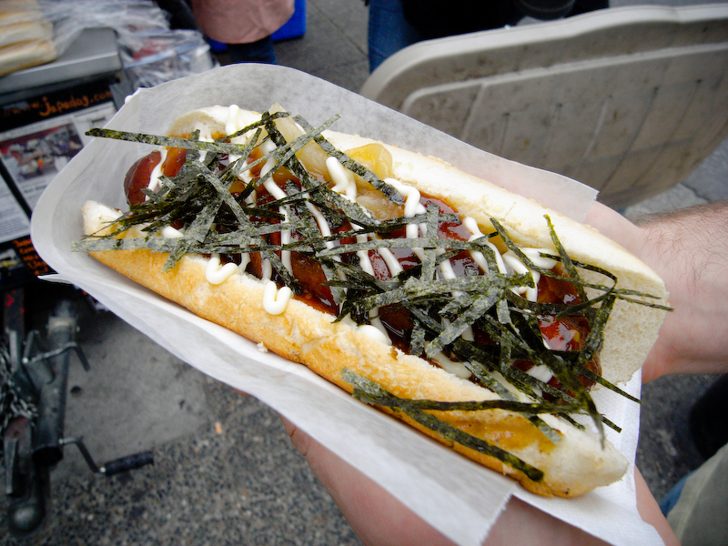
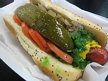
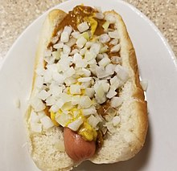

Popular Hot Dog Varieties
American Hot Dogs
The classic American Hot Dog, usually served with mustard, ketchup, onions, and relish. The Dog itself is usually made of emulsified meat trimmings of chicken, beef, or pork.
Mexican Sonoran Dog
This delicious Mexican Hot Dog is typically wrapped in bacon and topped with pinto beans, onions, tomatoes, and sometimes mayonaise, mustard, and jalapeño salsa. It is made of the same ingredients as the american hot dog.

Japanese Japadog
This small experience of Japan often features teriyaki sauce and seaweed upon a typical hot dog.
Chicago Dog
This style dog is an all beef frankfurter on a poppy seed bun topped with yellow mustard, chopped white onions, bright green sweet pickle relish, a dill pickle spear, tomato slices, pickled sport peppers, and a dash of celery salt.
Coney Island Hot Dog
This is a staple in the Hot Dog community. This typical hot dog is topped with a savory meat sauce, yellow mustard, white onions, and sometimes cheese.
About Us
Discover a world of hot dog delights at Hot Dog Info! We are your ultimate destination for everything hot dog-related. Whether you're a fan of the classic American hot dog or you're eager to explore exotic variations from around the globe, our website has you covered.
At Hot Dog Info, we're passionate about hot dogs, and we've curated an extensive collection of hot dog varieties for your enjoyment. From the iconic American hot dog, served with mustard, ketchup, onions, and relish, to international favorites like the Japanese Japadog and the Mexican Sonoran Dog, our website offers a mouthwatering journey through hot dog culture.
Looking to recreate the magic at home? We've got you covered with our collection of delicious hot dog recipes. From gourmet toppings to unique flavor combinations, our recipes will inspire your culinary creativity. Impress your friends and family with your hot dog-making skills!
We believe that hot dogs are meant to be celebrated with friends. Join our hot dog community to share your hot dog experiences, recipes, and recommendations. Connect with fellow hot dog enthusiasts from around the world and be a part of the global hot dog conversation.
Don't miss out on the latest hot dog trends, recipes, and events. Subscribe to our newsletter and follow us on social media to stay updated with all things hot dog-related.
If youre excited to learn, then start exploring our website and gain all the knowledge you can!